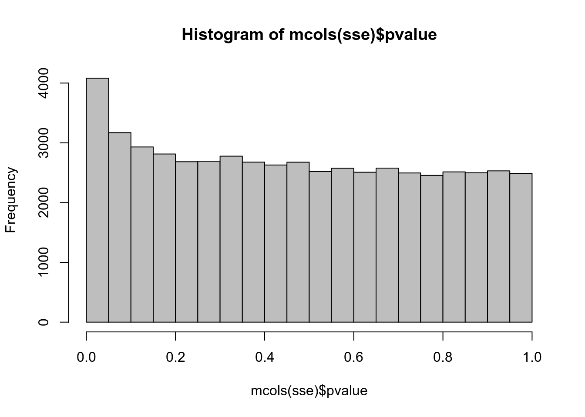
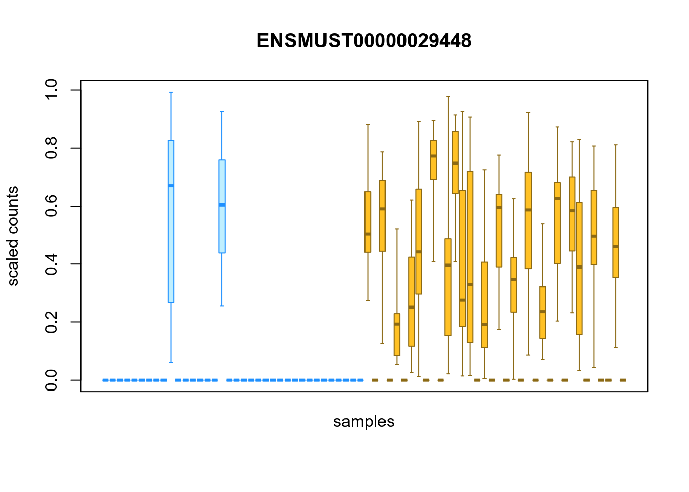
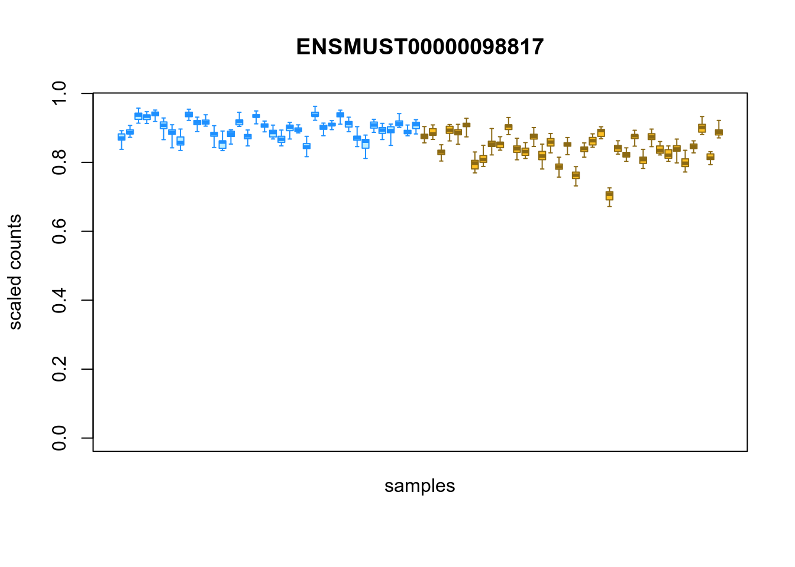
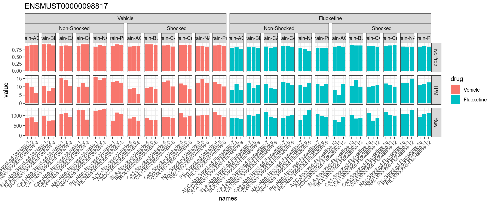
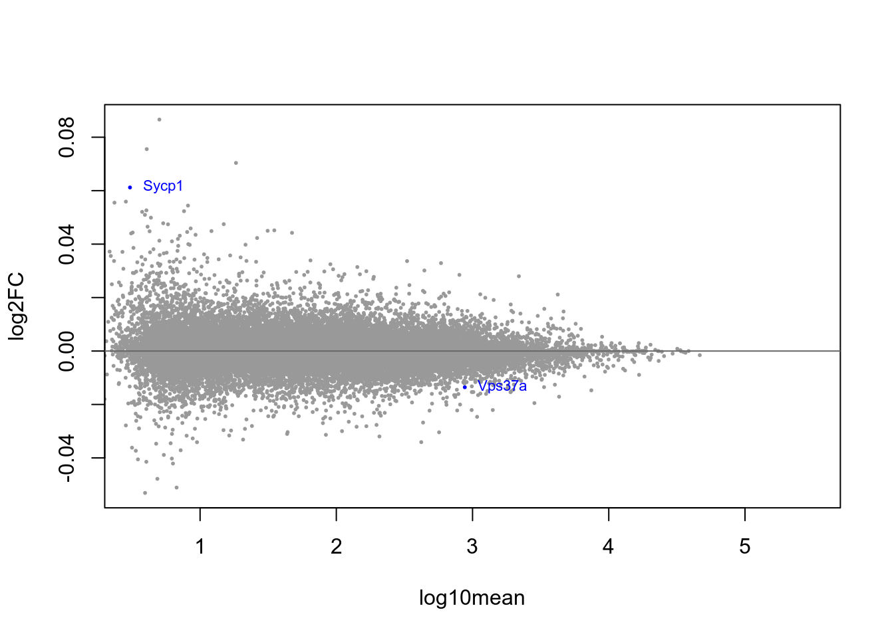

3.2.2.5 DTU
3.2.2.5.1 Fluoxetine VS Vehicle
## Progress: 1 on 100 Progress: 2 on 100 Progress: 3 on 100 Progress: 4 on 100 Progress: 5 on 100 Progress: 6 on 100 Progress: 7 on 100 Progress: 8 on 100 Progress: 9 on 100 Progress: 10 on 100 Progress: 11 on 100 Progress: 12 on 100 Progress: 13 on 100 Progress: 14 on 100 Progress: 15 on 100 Progress: 16 on 100 Progress: 17 on 100 Progress: 18 on 100 Progress: 19 on 100 Progress: 20 on 100 Progress: 21 on 100 Progress: 22 on 100 Progress: 23 on 100 Progress: 24 on 100 Progress: 25 on 100 Progress: 26 on 100 Progress: 27 on 100 Progress: 28 on 100 Progress: 29 on 100 Progress: 30 on 100 Progress: 31 on 100 Progress: 32 on 100 Progress: 33 on 100 Progress: 34 on 100 Progress: 35 on 100 Progress: 36 on 100 Progress: 37 on 100 Progress: 38 on 100 Progress: 39 on 100 Progress: 40 on 100 Progress: 41 on 100 Progress: 42 on 100 Progress: 43 on 100 Progress: 44 on 100 Progress: 45 on 100 Progress: 46 on 100 Progress: 47 on 100 Progress: 48 on 100 Progress: 49 on 100 Progress: 50 on 100 Progress: 51 on 100 Progress: 52 on 100 Progress: 53 on 100 Progress: 54 on 100 Progress: 55 on 100 Progress: 56 on 100 Progress: 57 on 100 Progress: 58 on 100 Progress: 59 on 100 Progress: 60 on 100 Progress: 61 on 100 Progress: 62 on 100 Progress: 63 on 100 Progress: 64 on 100 Progress: 65 on 100 Progress: 66 on 100 Progress: 67 on 100 Progress: 68 on 100 Progress: 69 on 100 Progress: 70 on 100 Progress: 71 on 100 Progress: 72 on 100 Progress: 73 on 100 Progress: 74 on 100 Progress: 75 on 100 Progress: 76 on 100 Progress: 77 on 100 Progress: 78 on 100 Progress: 79 on 100 Progress: 80 on 100 Progress: 81 on 100 Progress: 82 on 100 Progress: 83 on 100 Progress: 84 on 100 Progress: 85 on 100 Progress: 86 on 100 Progress: 87 on 100 Progress: 88 on 100 Progress: 89 on 100 Progress: 90 on 100 Progress: 91 on 100 Progress: 92 on 100 Progress: 93 on 100 Progress: 94 on 100 Progress: 95 on 100 Progress: 96 on 100 Progress: 97 on 100 Progress: 98 on 100 Progress: 99 on 100 Progress: 100 on 100##
## FALSE TRUE
## 54294 2## DataFrame with 6 rows and 2 columns
## log2FC qvalue
## <numeric> <numeric>
## ENSMUST00000098817 -0.0135554 0.010000
## ENSMUST00000029448 0.0611906 0.045000
## ENSMUST00000156211 -0.0148871 0.110000
## ENSMUST00000021567 -0.0128537 0.138000
## ENSMUST00000238390 0.0106139 0.138000
## ENSMUST00000074575 -0.0160573 0.151429
## sign.lfc
## sig -1 0 1
## FALSE 24684 5 29605
## TRUE 1 0 1## [1] "tx_id" "tx_biotype" "tx_cds_seq_start" "tx_cds_seq_end"
## [5] "gene_id" "tx_support_level" "tx_id_version" "gc_content"
## [9] "tx_name" "SYMBOL" "log10mean" "gene"
## [13] "keep" "stat" "log2FC" "pvalue"
## [17] "locfdr" "qvalue"Figure 3.9: Top upregulated isoforms
Figure 3.10: Top downregulated isoforms

Figure 3.11: Distribution of inferential replicates for the top upregulated isoform, for each sample, splitted by condition

Figure 3.12: Distribution of inferential replicates for the top downregulated isoform, for each sample, splitted by condition

Figure 3.13: Distribution of inferential replicates for the top downregulated isoform, for each sample, splitted by condition

Figure 3.14: MA-plot with blue-highlighted genes corresponding to those with qvalue < 0.1